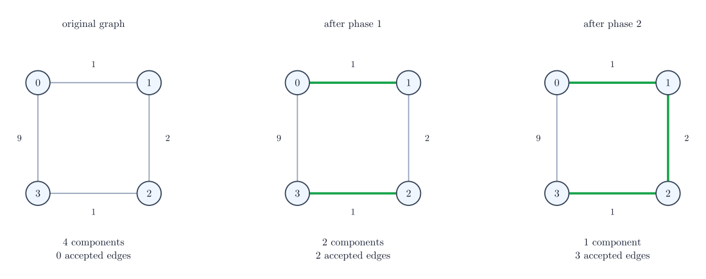
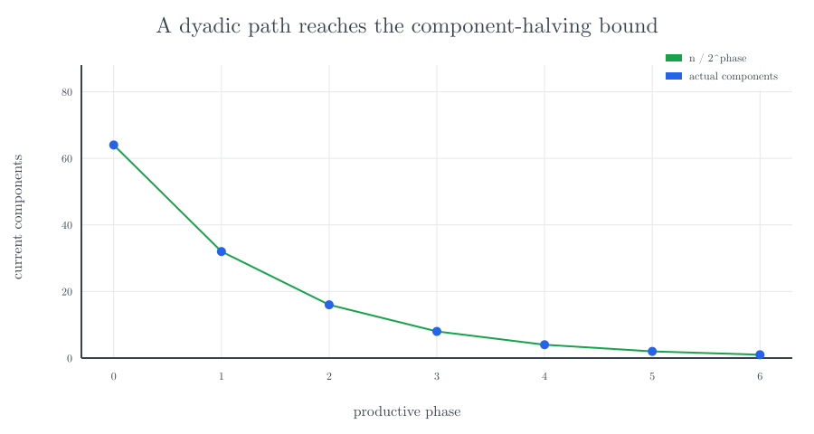
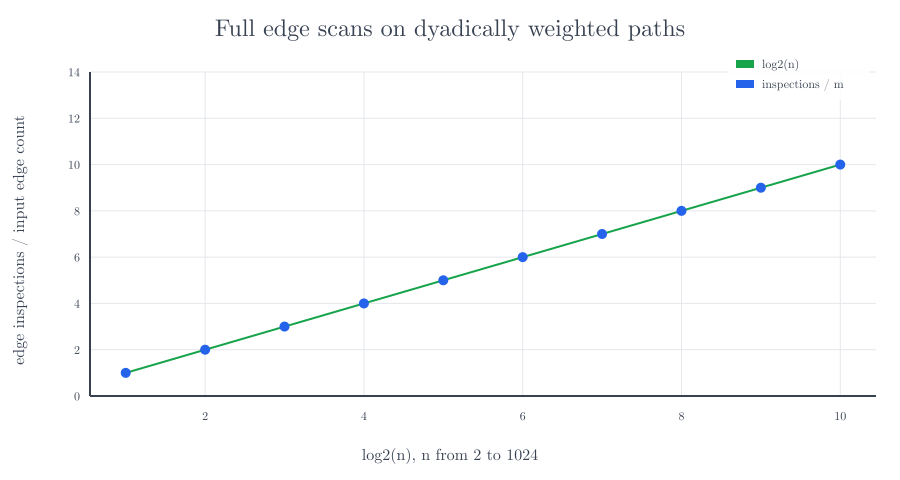

Borůvka's Algorithm: Minimum Spanning Forests by Component Merges
Abstract
Each component of a weighted undirected graph chooses its cheapest outgoing edge. Borůvka's algorithm merges components through those choices, repeating until the graph is connected or no further merge is possible. We retain the original four-vertex example of total weight four, inspect the core's real choices and accepted edges, and test disconnected graphs, ties, parallel edges and negative weights. A dyadically weighted path exhibits exactly log2(n) productive phases. Logical edge scans show the work behind that bound without being presented as runtime measurements.
Simple example: two pairs, then one tree
The original graph has edges (0,1,1), (1,2,2), (2,3,1) and (0,3,9), where each tuple is (u,v,weight). At the start, each vertex is its own component. Vertices 0 and 1 both choose edge 0–1, while vertices 2 and 3 both choose edge 2–3. Each edge is accepted once. The next scan finds edge 1–2 as the cheapest edge between the two remaining components, giving total 1+1+2=4.
All three panels read the accepted indices from boruvka_trace; the report
does not replay a separate version of the spanning-tree algorithm. Labels in
the table are each component's smallest original vertex, independent of the
internal union-find roots.
#include <dm/dm.hpp>
int main() {
std::filesystem::create_directories("build");
const std::vector<dm::algorithms::WeightedEdge> edges{{0,1,1},{1,2,2},{2,3,1},{0,3,9}};
const auto trace=dm::algorithms::boruvka_trace(4,edges);
const std::vector<dm::graphics::DiagramPoint> position{{0,1.5},{3,1.5},{3,-1.5},{0,-1.5}};
dm::graphics::Diagram diagram(65,1100);std::set<std::size_t> accepted;
for (std::size_t panel=0;panel<=trace.phases.size();++panel) {
const double shift=7.0*panel;
if (panel) for (auto i:trace.phases[panel-1].accepted_edge_indices) accepted.insert(i);
for (std::size_t i=0;i<edges.size();++i) {
const auto [u,v,w]=edges[i];dm::graphics::DiagramStroke stroke;stroke.color={148,163,184};
if (accepted.contains(i)) {stroke.color={22,163,74};stroke.width=4;}
diagram.path({{position[u].x+shift,position[u].y},{position[v].x+shift,position[v].y}},stroke);
const double dx=u==0&&v==3?-.5:u==1&&v==2?.5:0;
const double dy=u==0&&v==1?.5:u==2&&v==3?-.5:0;
diagram.text({shift+(position[u].x+position[v].x)/2+dx,(position[u].y+position[v].y)/2+dy},
std::format("{}",w),16);
}
dm::graphics::DiagramNodeStyle vertex;vertex.circle=true;vertex.width=.65;vertex.height=.65;vertex.padding=5;
for (std::size_t v=0;v<position.size();++v)
diagram.node(std::format("{}-{}",panel,v),{shift+position[v].x,position[v].y},std::format("{}",v),vertex);
const auto components=panel?trace.phases[panel-1].components_after:4;
diagram.text({shift+1.5,3.1},panel?std::format("after phase {}",panel):"original graph")
.text({shift+1.5,-3},std::format("{} component{}\n{} accepted edges",components,components==1?"":"s",accepted.size()));
}
diagram.save_svg("build/boruvka_four_vertices.svg");
std::print("| phase | component labels before | choices (component: edge index) | accepted edge indices | components after |\n"
"| ---: | :--- | :--- | :--- | ---: |\n");
for (std::size_t i=0;i<trace.phases.size();++i) {
const auto& phase=trace.phases[i];std::string choices;
for (auto choice:phase.choices) choices+=std::format("{}{}: {}",choices.empty()?"":", ",choice.component_label,choice.edge_index);
std::print("| {} | {} | {} | {} | {} |\n",i+1,phase.component_labels,choices,phase.accepted_edge_indices,phase.components_after);
}
std::print("\nTotal weight: {}; connected: {}; edge inspections: {}.\n",
trace.forest.total_weight,trace.forest.is_connected,trace.edge_scans);
}| phase | component labels before | choices (component: edge index) | accepted edge indices | components after |
|---|---|---|---|---|
| 1 | [0, 1, 2, 3] | 0: 0, 1: 0, 2: 2, 3: 2 | [0, 2] | 2 |
| 2 | [0, 0, 2, 2] | 0: 1, 2: 1 | [1] | 1 |
Total weight: 4; connected: true; edge inspections: 8.

Why component choices are safe
For a current component C, its outgoing edges cross the cut between C and the other vertices. A minimum-weight crossing edge can be included in an MST that extends the existing forest: if a candidate tree omits it, adding it creates a cycle with another crossing edge whose weight is no smaller. Exchanging those edges preserves connectivity and cannot increase total weight.
Choices use component membership at the start of the phase. The core scans edges in input order and replaces a choice only for a strictly smaller weight, equivalent to breaking ties by (weight, input index). This consistent global tie order makes the choices compatible with a minimum forest. The merge loop checks current connectivity before accepting an edge, so duplicate choices are not added twice. Acceptance order follows ascending internal union-find root order, with union by rank retaining the first root on a rank tie.
For a connected input with c>1 current components, each has an outgoing choice. Every connected group formed by those choices contains at least two old components, hence at most floor(c/2) new components remain. For n=2^k, there are at most k productive phases. The same reasoning applies separately inside each original connected component of a disconnected graph. Isolated components remain unchanged, so the total number of components of a disconnected graph need not halve.
Forests, equal weights, loops and invalid inputs
The API accepts finite negative and zero weights. Self-loops are valid but never connect components; parallel edges remain distinct by input index. Equal weights can give multiple MSTs, and changing input order may change the selected tree while preserving its minimum weight. A disconnected result spans every original component and sets is_connected=false. Empty and singleton graphs are connected by convention and require no phase scans.
#include <dm/dm.hpp>
int main() {
using Edge=dm::algorithms::WeightedEdge;
struct Example {std::string name;std::size_t n;std::vector<Edge> edges;};
const std::vector<Example> examples{
{"empty",0,{}},{"singleton with loop",1,{{0,0,-100}}},
{"equal-weight triangle",3,{{0,1,1},{1,2,1},{2,0,1}}},
{"parallel edges and negative loop",3,{{0,0,-100},{0,1,4},{1,0,-2},{0,1,-2},{1,2,0},{2,0,0}}},
{"two pairs and two isolated vertices",6,{{0,1,-3},{2,3,2}}}};
std::print("| case | vertices | selected edges | weight | final components | connected | scans |\n"
"| :--- | ---: | ---: | ---: | ---: | :--- | ---: |\n");
for (const auto& example:examples) {
const auto trace=dm::algorithms::boruvka_trace(example.n,example.edges);
std::print("| {} | {} | {} | {} | {} | {} | {} |\n",example.name,example.n,trace.forest.edges.size(),
trace.forest.total_weight,trace.component_count,trace.forest.is_connected,trace.phases.size());
}
const auto forest=dm::algorithms::boruvka_trace(6,{{0,1,-3},{2,3,2}});
const auto& terminal=forest.phases.back();
std::print("\nThe final disconnected scan starts with {} components, makes {} choices and accepts {} edges.\n",
terminal.components_before,terminal.choices.size(),terminal.accepted_edge_indices.size());
}| case | vertices | selected edges | weight | final components | connected | scans |
|---|---|---|---|---|---|---|
| empty | 0 | 0 | 0 | 0 | true | 0 |
| singleton with loop | 1 | 0 | 0 | 1 | true | 0 |
| equal-weight triangle | 3 | 2 | 2 | 1 | true | 1 |
| parallel edges and negative loop | 3 | 2 | -2 | 1 | true | 1 |
| two pairs and two isolated vertices | 6 | 2 | -1 | 4 | false | 2 |
The final disconnected scan starts with 4 components, makes 0 choices and accepts 0 edges.
Out-of-range endpoints and nonfinite weights raise invalid_argument before union-find allocation. The selected weights accumulate in long double; a final total outside finite double range raises overflow_error. Inputs are borrowed and unchanged. The returned edges and traces own their storage. This report uses generated graphs because the combinatorial method needs no observational dataset.
A tight example for the phase bound
dyadic_path_edges(n) supplies a reusable native graph fixture. The edge
between i-1 and i has weight 1+v2(i), where v2 counts factors of two in i.
For eight vertices the weights are 1,2,1,3,1,2,1. Phase one joins adjacent
pairs through weight one; phase two joins pairs of those pairs through weight
two; phase three joins the two blocks through weight three. For n=2^k the
same structure continues for exactly k phases. Since this input is already a
tree, every edge must eventually be selected; the experiment concerns phase
structure rather than a difficult choice of final tree.
#include <dm/dm.hpp>
int main() {
std::filesystem::create_directories("build");
const std::size_t n=64;const auto edges=dm::algorithms::dyadic_path_edges(n);
const auto trace=dm::algorithms::boruvka_trace(n,edges);
std::vector<double> phase{0},observed{double(n)},bound{double(n)};
std::print("| phase | components before | accepted edges | components after | edges inspected |\n"
"| ---: | ---: | ---: | ---: | ---: |\n");
for (std::size_t i=0;i<trace.phases.size();++i) {
const auto& step=trace.phases[i];
phase.push_back(i+1);observed.push_back(step.components_after);bound.push_back(double(n)/std::pow(2.0,i+1));
std::print("| {} | {} | {} | {} | {} |\n",i+1,step.components_before,
step.accepted_edge_indices.size(),step.components_after,step.edges_scanned);
}
dm::graphics::RPlot::create()
.lines(phase,bound,"n / 2^phase",dm::RGB{22,163,74},2)
.points(phase,observed,"actual components",dm::RGB{37,99,235},5)
.title("A dyadic path reaches the component-halving bound")
.x_label("productive phase").y_label("current components")
.y_limits(0,88).size(900,480).save_svg("build/boruvka_component_halving.svg");
std::print("\nFinal forest: {} edges, weight {}, connected {}.\n",
trace.forest.edges.size(),trace.forest.total_weight,trace.forest.is_connected);
}| phase | components before | accepted edges | components after | edges inspected |
|---|---|---|---|---|
| 1 | 64 | 32 | 32 | 63 |
| 2 | 32 | 16 | 16 | 63 |
| 3 | 16 | 8 | 8 | 63 |
| 4 | 8 | 4 | 4 | 63 |
| 5 | 4 | 2 | 2 | 63 |
| 6 | 2 | 1 | 1 | 63 |
Final forest: 63 edges, weight 120, connected true.

Measured work and the implementation's bounds
Every phase scans all m input edges, including loops and edges already inside components. With P actual scans, the logical counter is exactly mP. It excludes the initial validation pass and does not count union-find operations or vertex-array work. The following sweep verifies P=log2(n) on the dyadic family, where m=n-1. The ratio of actual inspections to m log2(n) is one.
#include <dm/dm.hpp>
int main() {
std::filesystem::create_directories("build");
std::vector<double> exponent,observed,theory;
std::print("| n | m | productive phases | edge inspections | inspections / (m log2(n)) |\n"
"| ---: | ---: | ---: | ---: | ---: |\n");
for (unsigned k=1;k<=10;++k) {
const std::size_t n=std::size_t{1}<<k;const auto edges=dm::algorithms::dyadic_path_edges(n);
const auto trace=dm::algorithms::boruvka_trace(n,edges);
const auto expected=edges.size()*k;
if (trace.phases.size()!=k || trace.edge_scans!=expected || trace.component_count!=1) return 1;
exponent.push_back(k);observed.push_back(double(trace.edge_scans)/edges.size());theory.push_back(k);
std::print("| {} | {} | {} | {} | {:.4f} |\n",n,edges.size(),trace.phases.size(),trace.edge_scans,
double(trace.edge_scans)/expected);
}
dm::graphics::RPlot::create()
.lines(exponent,theory,"log2(n)",dm::RGB{22,163,74},2)
.points(exponent,observed,"inspections / m",dm::RGB{37,99,235},5)
.title("Full edge scans on dyadically weighted paths")
.x_label("log2(n), n from 2 to 1024").y_label("edge inspections / input edge count")
.y_limits(0,14).size(900,480).save_svg("build/boruvka_edge_scans.svg");
}| n | m | productive phases | edge inspections | inspections / (m log2(n)) |
|---|---|---|---|---|
| 2 | 1 | 1 | 1 | 1.0000 |
| 4 | 3 | 2 | 6 | 1.0000 |
| 8 | 7 | 3 | 21 | 1.0000 |
| 16 | 15 | 4 | 60 | 1.0000 |
| 32 | 31 | 5 | 155 | 1.0000 |
| 64 | 63 | 6 | 378 | 1.0000 |
| 128 | 127 | 7 | 889 | 1.0000 |
| 256 | 255 | 8 | 2040 | 1.0000 |
| 512 | 511 | 9 | 4599 | 1.0000 |
| 1024 | 1023 | 10 | 10230 | 1.0000 |

Initialization and validation cost O(n+m). Each phase also initializes and visits n choice slots and performs union-find work with inverse-Ackermann amortized factor alpha(n). A conservative bound for this implementation is O(n+m+P(n+m)alpha(n)), with P=O(log(n+1)); disconnected inputs can include one final unproductive scan. The simpler O(m log n) description suppresses union-find costs and the vertex-array work that matters when many vertices are isolated. The ordinary forest API uses O(n) auxiliary storage and O(n) output storage; retaining per-phase labels and choices in the trace uses O(nP) additional owned storage.
References
- O. Borůvka (1926), O jistém problému minimálním, Práce Moravské přírodovědecké společnosti III, 3, 37–58. [Original paper archive](https://dml.cz/handle/10338.dmlcz/500115).
- R. Sedgewick and K. Wayne, Algorithms, fourth edition, [BoruvkaMST documentation](https://algs4.cs.princeton.edu/code/javadoc/edu/princeton/cs/algs4/BoruvkaMST.html), for the standard component-choice implementation and forest terminology.